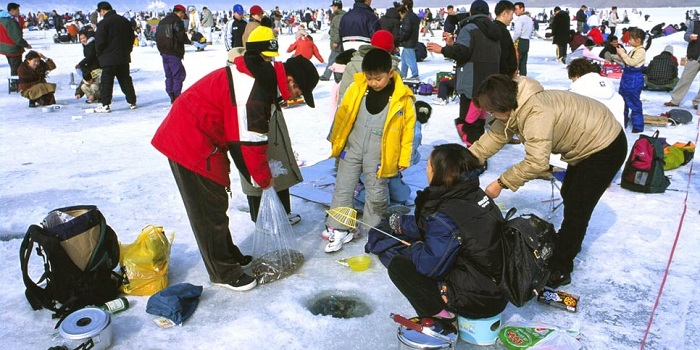
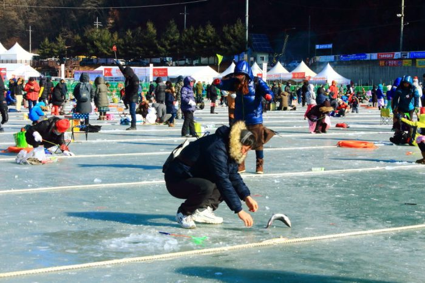
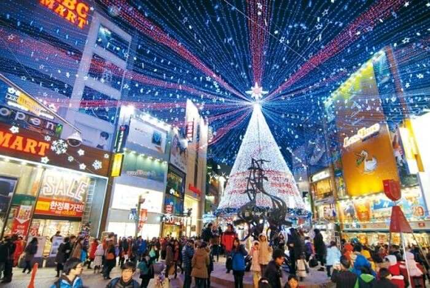
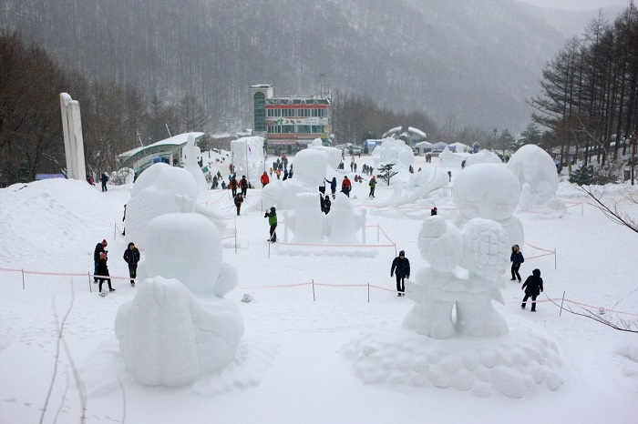

Du lịch Hàn Quốc
Welcome to Korea
Welcome to Korea
Bạn là một người kiên nhẫn và đang tìm kiếm điều mang lại sự thư thái cho tâm hồn, vậy thì hãy đặt ngay vé du lịch Hàn Quốc trong mùa đông này. Đến đó, bạn sẽ được trải nghiệm một trong những lễ hội Hàn Quốc mùa đông đặc sắc và đầy khác biệt – lễ hội câu cá dưới băng.
Khi mặt hồ Soyangho đóng băng, những du khách và người dân địa phương kéo về đây, tham gia ngày hội câu cá thú vị này. Những tiếng nói cười, âm thanh náo nhiệt vang vọng cả không gian như xua tan đi cái giá lạnh của thời tiết. Và rồi có những khoảnh khắc trầm tĩnh, yên lặng ngồi thả mồi câu vào những lỗ tròn được khoét trên băng, cảm giác chờ đợi ấy cũng thật thư giãn. Khắp cả mặt hồ, người người ngồi kiên nhẫn bên lỗ băng, cảnh tượng thú vị, đầy vui vẻ. Câu cá đã “sướng”, được thưởng thức món ăn từ những chú cá mình câu được càng thú vị hơn. Hương vị tươi ngon của những chú cá sống khiến người ta muốn ăn mãi không ngừng. Đâu chỉ có vậy, tại lễ hội Hàn Quốc này, bạn cũng có thể tham gia trượt băng hay chơi đá tuyết, vui thích vô cùng.
Nếu bạn đã có dịp tham gia tour du lịch Hàn Quốc mùa đông thì đừng bỏ lỡ cơ hội tận mắt thưởng ngoạn sông băng Hwacheon Sancheoneo – một trong bảy kỳ quan mùa đông xứ Hàn. Đặc biệt đây là nơi diễn ra lễ hội sông băng đầy hấp dẫn và thu hút. Lễ hội thường diễn ra vào tháng Giêng ở suối Hwacheoncheon, Hwachoen-gu, Gangwon-do. Đây được đánh giá là một trong 4 lễ hội Hàn Quốc mùa đông thu hút du khách nhất.
Lễ hội sông băng Hwacheon Sancheoneo mang đến cho khách du lịch những trải nghiệm hấp dẫn. Cùng với đó là hàng loạt những hoạt động đa dạng và thú vị. Từ câu cá núi trên sông cho đến trượt tuyết, tất cả đều nhận được sự hưởng ứng nồng nhiệt từ người tham gia. Cùng với đó là cảnh quan thiên nhiên tuyệt đẹp với dòng sông đóng băng trong tuyết, đem đến cảm giác mới mẻ, thích thú cho người ghé thăm.
Một lễ hội mùa đông ở Hàn Quốc cũng kích thích không kém đó là lễ hội cá hồi Pyeongchang. Một bữa tiệc ngoài trời náo nhiệt với hoạt động vui nhộn chờ bạn khám phá. Lễ hội được diễn ra khoảng tháng 12 đến tháng 2 tại suối Odeacheon, Pyeongchang-gun thuộc tỉnh Gangwon-do.
Pyeongchang là điểm đến lý tưởng không chỉ cho việc thưởng ngoạn cảnh đẹp tuyết trắng mà còn hấp dẫn bởi hoạt động giải trí sôi động. Giữa khung cảnh lãng mạn ngày đông, việc câu cá hay trượt tuyết góp vào bản hòa ca thiên nhiên nét chấm phá tràn trề sinh lực, đầy nhiệt huyết.
Tạm rời xa những không gian phủ đầy tuyết trắng trên mặt hồ, hãy gia nhập vào vũ điệu đường phố sôi động với lễ hội cây thông noel Busan. Nét hiện đại, náo nhiệt trên những tuyến phố cùng cây thông nhiều màu sắc họa nên bức tranh nghệ thuật đẹp mê hồn. Lễ hội Hàn Quốc này diễn ra vào khoảng tháng 11 đến tháng 1 tại Gwangbok-ro, Jung-gu, Busan.
Nổi bật nhất trong lễ hội đó là cây thông noel khổng lồ với chiều cao lên đến 20m. Những chùm đèn đầy màu sắc lung linh quấn quanh cây như thắp sáng bầu trời đêm Busan. Phía xa xa là tiếng thánh ca vang vọng hòa trong màn biểu diễn nghệ thuật Manta, đặc sắc vô cùng. Cả không gian ngập tràn tiếng cười nói rộn rã, mang đến bầu không khí gia đình ấm áp và yêu thương
Lễ hội Hàn Quốc mùa đông – nét văn hóa đặc sắc giữa thiên nhiên tuyết trắng lãng mạn tràn đầy những điều bất ngờ chờ bạn khám phá. Lễ hội Taebaeksan là một trong số đó. Núi Taebaeksan được ví như “xứ sở thần tiên mùa đông” với lớp tuyết trắng bao phủ tuyệt đẹp. Chính vì vậy, ngọn núi này là địa điểm thường xuyên tổ chức lễ hội tuyết Taebaek. Tại đây, du khách sẽ được chiêm ngưỡng những tác phẩm nghệ thuật được làm từ tuyết. Các tác phẩm điêu khắc khổng lồ cao chót vót được trưng bày trên quảng trường Danggol bao gồm các cung điện của Nga, các vị thần hộ mệnh trong cung hoàng đạo, xe ngựa bí ngô và khủng long.
Là một trong những lễ hội mùa đông lớn nhất Hàn Quốc, lễ hội tuyết núi Taebaeksan thu hút rất nhiều du khách đến tham quan và thưởng thức những nét đẹp truyền thống trong văn hóa của người Hàn Quốc. Mùa đông xứ củ sâm là vậy đó. Không lạnh lẽo, đơn điệu, nhàm chán mà đầy thú vị, náo nhiệt với những lễ hội Hàn Quốc mùa đông. Những lớp tuyết dày đặc ôm lấy khắp con đường như nốt nhạc hòa chung trong khúc đàn đầy trầm bổng, xen lẫn những tiếng reo vui, hạnh phúc. Trải nghiệm mùa đông nơi ấy, bạn mới thấy hết cái đẹp, cái hay, cái ý nghĩa của nơi này.
GỢI Ý TOUR DU LỊCH HÀN QUỐC |
|---|
>> Hà Nội – Hàn Quốc: Seoul – Nami – Everland 5N Bay T’way Air
|
Top 20 điểm tham quan nhất định phải ghé thăm trong hành trình chinh phục Seoul

Điện thoại: 0903357616
Email: thaontps24690@fpt.edu.vn